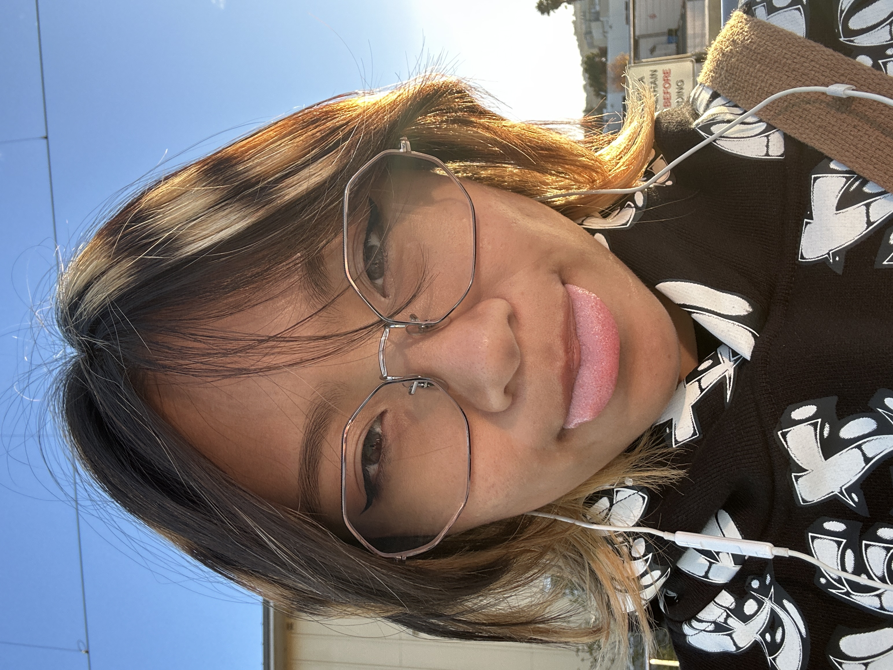

I selected this post from @bluffycr3am because I think it showcased her dynamic poses and clean artstyle. However, when I was working on this assignment, part of me wished I chose a different post as I admire her facial expressions and I don't think this was the best representation of her art.
My alt text for this image is "Digitally drawn Spider-man holding a surprised Gwen Stacy mid-swing over shadowy hands with a yellow burst behind them."
I rejected an alt text that included "over a blue to yellow gradient" because it didn't fit under the 125 character limit and I realized it wasn't necessary to include in context. That is why I opted to include "with a yellow burst behind them instead because it added more emphasis to the drawing's description.

I really like this post from @omo.core because of its drastic shadows on one of his simple characters; his other art is also beautiful but I wanted to highlight his gorgeous light and shadows.
The alt text I put is "Digitally painted tired green mug character lit from behind stumbling and spilling its contents with chips of the rim broken off."
There were other aspects I thought to include such as "yellow hallway background", "cubes with smiley faces", or even "tea spilling out" because I ultimately realized I did not quite know exactly what I was looking at. So, instead of making assumptions, I wrote what I did know and what was actually the center of the artwork.

I selected this post from @annalauraart because she doesn't always include an image at the end of all the panels she painted, so I liked having one image with the entire story on it. Also, I thought this story woudl connect most with a more general audience as other posts I considered dealt with love or loss, so I wanted to keep things positive and personal to identity, something I thought we could all understand.
The alt text I wrote is "Four watercolor comic panels of a little yellow cat doing different activities that make it happy with inspiring text."
Other iterations included way too many details that did not fit under 125 characters, so I wanted to instead capture the main message of the comic.

I selected this photo for my About page so the reader can get an idea of who is behind the website. I took this at the Caltrain stop coming back from work and I thought it captured a pretty good general idea of me.
The alt text I decided on was "Front-facing Aryn with a small smile and tongue out."
An alternative I rejected was "Selfie of Aryn front-facing with a smile and tongue out." It was difficult to come up with an alt text for my image, but I wanted to keep the description pretty general. However, my rejected alt text was too general and used words like "selfie of" which is redundant for screen readers.